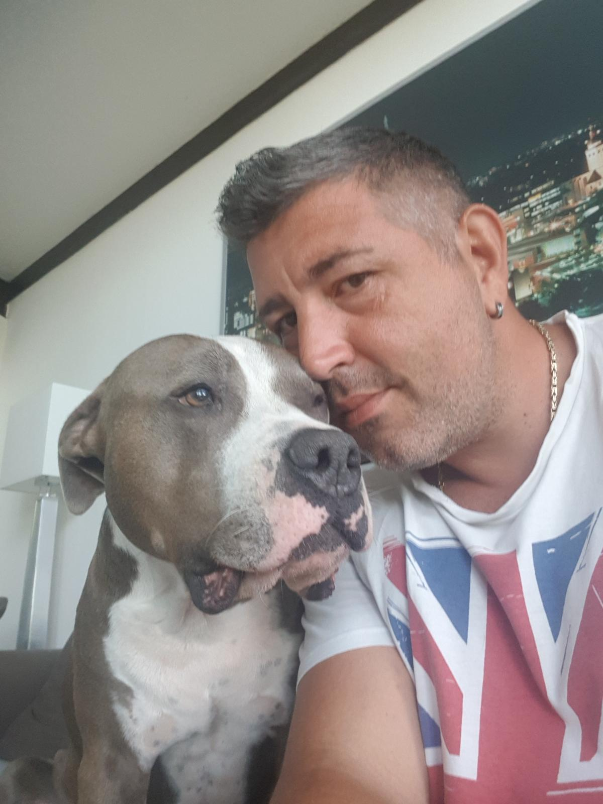
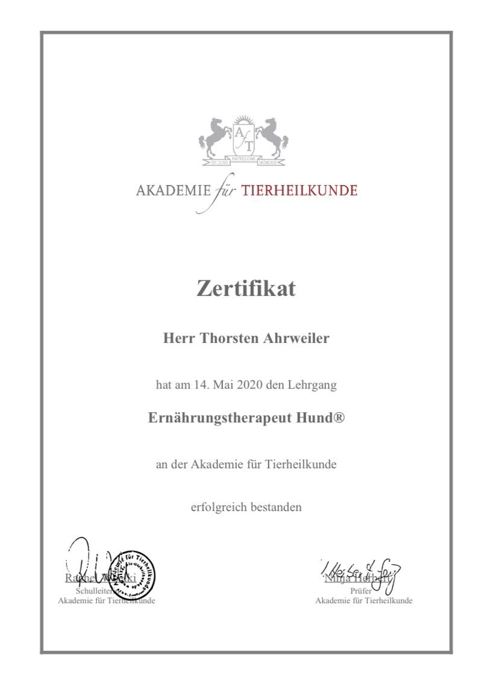

koeln-barf.de
Worringer BARF-Shop

Thorsten betreibt den Worringer BARF-Shop in Köln und berät Hundehalter:innen rund um die artgerechte Rohfütterung (BARF). Sein Ziel: gesunde, individuell abgestimmte Ernährung für jeden Hund – von der ersten Umstellung bis zur laufenden Betreuung.
Er ist zertifizierter Ernährungstherapeut für Hunde und bringt fundiertes Fachwissen zu Rohfütterung, Zusatzstoffen und individueller Rationsgestaltung mit.
Ausgestellt von der Akademie für Tierheilkunde, 14. Mai 2020.

Gerne berate ich Sie persönlich im Laden oder telefonisch. Kontaktdaten →